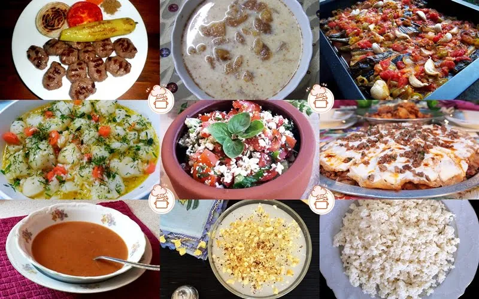
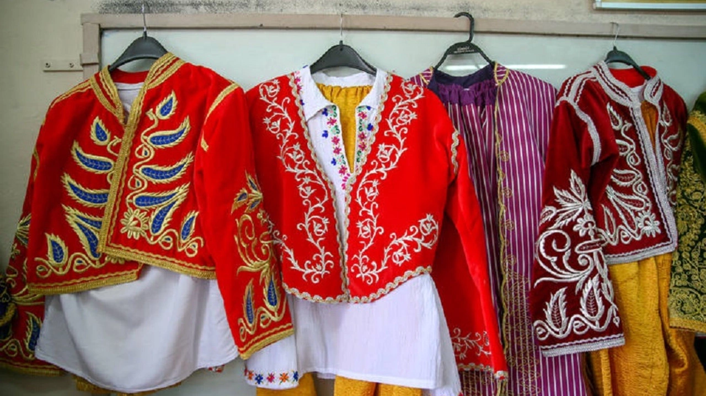

GELENEK GÖRENEKLERİMİZ

Aydın mutfağı, Türkiye'nin çok zengin, çeşidi bol ve lezzetli mutfakları arasındadır. Yörenin zeytinyağlı yemekleri, incir,üzüm ve bunlardan yapılan şaraplar, narenciye ürünleri, turunç reçeli ve çipura, kefal, mercan ve barbunya gibi zengin balık çeşitlerinin tadılması tavsiye edilir. Yörenin kendine özgü yemeklerinden bazıları; çorbalardan tarhana çorbası, kulak çorbası; yemeklerden acılı güveç, patlıcan biber kızartma, zeytinyağlı kırlı kızartma, zeytinyağlı taze ve kuru börülce, patlıcan kavurma, sarmaşık ve kedirgen kavurma, yaprak sarma, etli nohut yahnisi, nohutlu kereviz, etli enginar, arap saçı,ciğer sote, imambayıldı, keşkek, tandır kebap, yuvarlama (sıkma), paşa böreği, cilav(ayran böreği); salatalardan patlıcan-biber teretoru (turşusu), börülce teretoru, turp otu salatası, semizotu salatası, çingene pilavı; tatlılardan ise irmik helvası, zerde, muhallebi, sütlaç, aşure, lokma, pelvize tatlısı, paşa böreği, yuvarlama, ısırganotu böreği sayılabilir.

Hızlı Kentleşme ve modern yaşantı eğilimleri nedeniyle Aydın yöresi geleneksel giysileri çoğunlukla kırsal yerleşim birimlerinde görülmektedir Fakat çeşitli kutlamalarda ve festivallerde ve özel günlerde geleneksel giysileri görmek mümkündür. Yörükler ve Türkmenler giysilerin çok süslü, renkli ve göz alıcı olmasına özen gösterirler. Baş örtüsünden takkeye, börümcük gömleğe, çuhadan işlemeli cepken şalvara, üç eteğe dek pek çok giyim eşyasının el dokuması olması ayrı bir önem taşır. Giyimlerin vazgeçilmez parçaları olan nakışlar, oyalar, işlemeler, sim işlemeler değişik özellikler taşır. Efe giyimi Aydın yöresinin simgesidir. Efeler püsküllü fes, yemeni, zıbın, camadan, cepken ve şalvar giyerler. Beldeki örme kuşak şal ve deri silahlık ve baldırdaki tozluk giyimi tamamlar.


 Didim ya da eski ismiyle Yenihisar, Aydın'ın turistik bir ilçesidir. Doğuda Muğla il sınırı, Güllük Körfezi ve Akbük Koyu, batıda ve güneyde Ege Denizi, kuzeyde Bafa Gölü ve Büyük Menderes ile sınırlanmış bir yarımada şeklindedir. Yüzölçümü 402 km²'dir. 2022 yılı nüfus sayımı sonuçlarına göre 97.000 kişinin yaşadığı ilçede 16 mahalle bulunmaktadır.
Didim ya da eski ismiyle Yenihisar, Aydın'ın turistik bir ilçesidir. Doğuda Muğla il sınırı, Güllük Körfezi ve Akbük Koyu, batıda ve güneyde Ege Denizi, kuzeyde Bafa Gölü ve Büyük Menderes ile sınırlanmış bir yarımada şeklindedir. Yüzölçümü 402 km²'dir. 2022 yılı nüfus sayımı sonuçlarına göre 97.000 kişinin yaşadığı ilçede 16 mahalle bulunmaktadır.